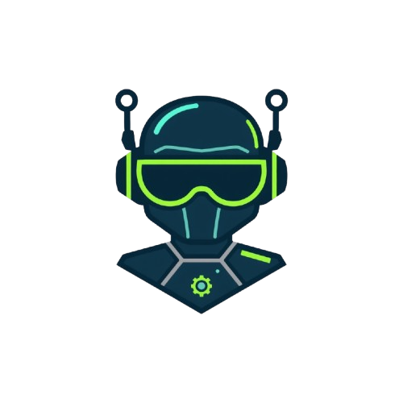

header>

CYBER
KIDS
PRO
Inicio
Jugar y Aprender
Biblioteca Segura
Espacio Familiar
Puntos:
0
🌟
Misión 1: ¿Hacker o Amigo? 🧑💻
Lee la situación digital y decide si debes confiar o bloquear para proteger tus datos.
Cargando misión...
🚫 Bloquear / Reportar
✅ Es Seguro / Confiar
⬅️ Volver a Selección de Misiones